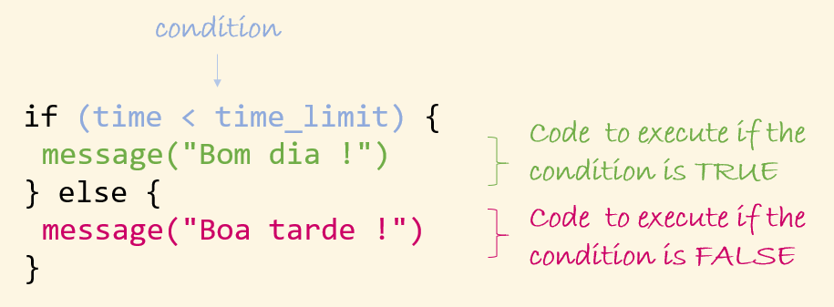
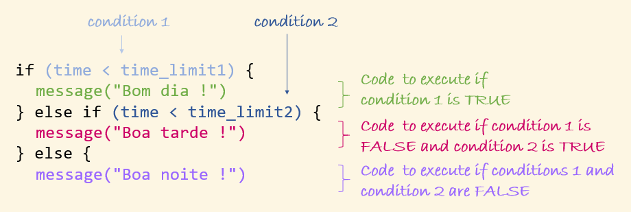

Cirad - UnB
2025-05-24
Let’s load the package we will use
and some objects we save last session.
Conditional execution means running different blocks of code depending on whether a condition is TRUE or FALSE.
Let’s write a function saying Bom dia only in the morning:
💡 The function hm from lubridate convert a character to a period object.
The command if is used with:
a condition (in parentheses)
a block of code (in curly brackets) that is executed only if the condition is TRUE
Let’s update our function to say Boa tarde in the afternoon:
and test it:
An if instruction can be followed by a else that is executed if the condition of if is FALSE.
But what to say in the evening?
We can add a second condition with else if. The second condition is tested only if the 1st condition is FALSE.
Only the block of the first TRUE condition is executed.
⚠️ The order of conditions is therefore important!
💡 Now that we understand, we can use a more concise syntax for our function:
We can modify our function mean_diam so that it rounds the diameter only if a value is given to the argument digits. For that we give the default value NULL to the argument digits, and add a test before rounding:
mean_diam <- function(circ, na_act = TRUE, digits = NULL) {
diam <- circ / (pi * 100) # Calculate diameters in m
mean_diam <- mean(diam, na.rm = na_act) # Calculate the mean
# Round the diameter only if a value is provided for digits
if(!(is.null(digits))) {
mean_diam <- round(mean_diam, digits = digits)
}
return(mean_diam) # Return the mean diameter
}What does this function do?
Let’s check:
The type of v is not supported by the functionTo write conditions, we use can:
logical operator: <, >, <=, >=, %in%, ==, !=, any, all…
type checking functions: is.numeric, is.character, is.logical…
and combine them using && and ||
💡 && and || are equivalent to & and | but only work for vector of length one. There are therefore safer to use in if/else conditions, as they need to return only one value.
Should we go the the party?
💡 As the expected values for the two arguments are booleans, we don’t need to write == TRUE.
Go!Maybe...Maybe...No way!What does this function do?
⚠️ if/else and ifelse (or its tidyverse equivalent if_else) are very different:
Our function mean_diam is intended to be used on a numerical vector. It returns an error otherwise:
Error in circ/(pi * 100) : non-numeric argument to binary operatorThis error is not explicit for a user, as they don’t know what circ/(pi * 100) is used for…
We can add a test to return NA when circ is not numeric, and add an explicit warning message:
mean_diam <- function(circ, na_act = TRUE, digits = NULL) {
if(!(is.numeric(circ))) {
warning("circ is not numeric, the result is NA")
return(NA) # if circ is not numeric, the execution stops here
}
diam <- circ / (pi * 100) # Calculate diameters in m
mean_diam <- mean(diam, na.rm = na_act) # Calculate the mean
if(!(is.null(digits))) { # Round the diameter only if a value is provided for digits
mean_diam <- round(mean_diam, digits = digits)
}
return(mean_diam) # Return the mean diameter
}warning does not stop the execution of the function (in our previous slide it’s return that stopped it).
On the contrary, stop triggers an error that stops the execution:
mean_diam <- function(circ, na_act = TRUE, digits = NULL) {
if(!(is.numeric(circ))) {
stop("circ must be numeric")
}
diam <- circ / (pi * 100) # Calculate diameters in m
mean_diam <- mean(diam, na.rm = na_act) # Calculate the mean
if(!(is.null(digits))) { # Round the diameter only if a value is provided for digits
mean_diam <- round(mean_diam, digits = digits)
}
return(mean_diam) # Return the mean diameter
}We have seen many examples of use of if/else inside a function, but we can also use it outside:
at the beginning of a script, together with a warning or a stop, to check if the data are valid
in a Quarto or R Markdown document, to adapt the output of a chunk depending on it result
…
A loop allows to repeatedly executes a block of code.
Let’s take a simple example:
[1] 1
[1] 2
[1] 3
[1] 4
[1] 5A for loop executes a block of code for each element of a vector. For each iteration, the loop sequentially assigns a value from the vector to the loop iterator.
In our example: item take the value 1, and the block of code prints it, then item take the value 2, and the block of code prints it, then …, then item take the value 5, and the block of code prints it
The vector can be of any mode, and we can give any name to the iterator (usually we use n or i)
Hello Lucas!Hello Gabriel!Hello Ana!Here the vector is of type character and the iterator is called name.
In the previous example
we iterate over the elements (the values) of a vector.
We can also iterate over names :
or over names of columns of a data frame:
# take a subset of iris
iris_sub <- iris %>% filter(Species == "setosa") %>% select(-Species)
# Create a new data frame with the same structure as iris_sub
# to store the scale data
iris_sub_scaled <- iris_sub
# replace the values in each colum by the scaled values
# iterating by column names
for (col in names(iris_sub)) {
iris_sub_scaled[[col]] <- as.vector(scale(iris_sub[[col]]))
}
summary(iris_sub_scaled) Sepal.Length Sepal.Width Petal.Length Petal.Width
Min. :-2.00290 Min. :-2.97575 Min. :-2.6603 Min. :-1.3854
1st Qu.:-0.58441 1st Qu.:-0.60148 1st Qu.:-0.3570 1st Qu.:-0.4365
Median :-0.01702 Median :-0.07387 Median : 0.2188 Median :-0.4365
Mean : 0.00000 Mean : 0.00000 Mean : 0.0000 Mean : 0.0000
3rd Qu.: 0.55037 3rd Qu.: 0.65160 3rd Qu.: 0.6507 3rd Qu.: 0.5124
Max. : 2.25255 Max. : 2.56421 Max. : 2.5221 Max. : 3.3591 We can also iterate over numeric indices:
Hello Lucas!Hello Gabriel!Hello Ana!Instead of seq_along(vec_name), we could also write 1:length(vec_name):
Hello Lucas!Hello Gabriel!Hello Ana!⚠️ seq_along is safer
Let’s take a vector of length 0:
[1] 0The loop should not be executed:
Why is that?
Iterating over numeric indices is the most common form. It is useful when we want to use the index (the iterator) for more than one purpose within the loop:
January is the month 1February is the month 2March is the month 3April is the month 4May is the month 5June is the month 6July is the month 7August is the month 8September is the month 9October is the month 10November is the month 11December is the month 12When a loop generates data, it is important to pre-allocate the output to the required size rather than grow it inside a loop, because pre-allocation avoids repeated memory copying and is significantly faster and more efficient, especially for large outputs
This is particularly important for especially for large outputs.
Let’s take an example of a while loop that simulate flipping a coin util we obtain a head:
[1] "head"A while loop executes a block of code as long as the conditions is true.
We can use next within a loop to skip the rest of the current iteration and move directly to the next one under a given condition.
Here we create a loop returning the mean of numeric columns of a data frame. We use next to skip any column that is not numeric:
We can use also use break, which stop the whole loop under a given condition.
Here nothing is return as the first column is not numeric, so the loop stops at the first iteration.
As for a function, a loop needs to be write step by step:
Plan the loop before you start coding.
Set the iterator to its first value while writing the loop.
Test each line of code as you write it, using that initial iterator value.
Once finished, test the full loop with the entire dataset.
Functional programming is a way of writing code based on the use of small functions.
It is often used as an alternative to loops.
map is a function from the package purr used to apply a function to each element of a vector or a list:
Let’s first create a vector and a small function:
To use map, we first pass the vector/list on which to apply a function, and then the function to apply
Let’s use our function mean_diam on a list of vectors of circumferences:
$sample1
[1] 0.4138883
$sample2
[1] 0.5007573
$sample3
[1] 0.4515381map always return a list.
But several variants of map returning vectors also exist:
Here is an example of use of map_chr on the list desserts (that we created before):
Sophia Eliott
"I loves banana bread !" "I loves pancakes !"
Karina
"I loves chocolate cake !" Note that this is an alternative to the following loop:
Sophia Eliott
"I loves banana bread !" "I loves pancakes !"
Karina
"I loves chocolate cake !" For a small function that we don’t want to reuse, we can define the function directly inside map:
Sophia Eliott
"I loves banana bread !" "I loves pancakes !"
Karina
"I loves chocolate cake !" The function walk is used when you want to perform an action for its side effect (e.g., printing a message, creating a plot, or saving a file). It doesn’t return a result:
Hello Lucas!Hello Gabriel!Hello Ana!💡This is equivalent to the for loop we wrote before.
across is a function of the package dplyr used to apply a function to several columns of a tibble.
across takes 2 arguments: the definition of he columns to transform, and the function to apply:
# A tibble: 6 × 5
id Question1 Question2 Question3 Question4
<chr> <fct> <fct> <fct> <fct>
1 A Agree Neutral Agree Agree
2 B Strongly agree Agree Strongly agree Strongly agree
3 C Agree Neutral Agree Neutral
4 D Agree Disagree Disagree Agree
5 E Agree Strongly disagree Disagree Disagree
6 F Strongly agree Strongly disagree Neutral Disagree The columns to transform can be specify:
using c() (as in the last example)
using :
The columns to transform can be specify:
The columns to transform can be specify:
Sepal.Length Sepal.Width Petal.Length Petal.Width
1 5.006 3.428 1.462 0.246💡 Note that here we have used across with summarise
We can also use where to specify the columns:
Sepal.Length Sepal.Width Petal.Length Petal.Width
1 5.843333 3.057333 3.758 1.199333Using across within mutate replace the columns. To keep them we need to indicate how to name them, using the argument .names:
# A tibble: 6 × 9
id Question1 Question2 Question3 Question4 Question1_recoded
<chr> <fct> <fct> <fct> <fct> <fct>
1 A 4 3 4 4 Agree
2 B 5 4 5 5 Strongly agree
3 C 4 3 4 3 Agree
4 D 4 2 2 4 Agree
5 E 4 1 2 2 Agree
6 F 5 1 3 2 Strongly agree
# ℹ 3 more variables: Question2_recoded <fct>, Question3_recoded <fct>,
# Question4_recoded <fct>To apply several functions to several columns with across, we can pass them in a list:
Sepal.Width_minimum Sepal.Width_maximum Sepal.Length_minimum
1 2 4.4 4.3
Sepal.Length_maximum
1 7.9The two following commands return almost the same results, but:
Sepal.Length Sepal.Width Petal.Length Petal.Width
5.006 3.428 1.462 0.246 Let’s create a tibble:
# A tibble: 3 × 2
Min Max
<dbl> <dbl>
1 1 4
2 25 75
3 300 500🥴 This didn’t work… mutate was applied on all rows using Min and Max of the first row…
We use rowwise to apply the command line by line:
# A tibble: 3 × 3
# Rowwise:
Min Max rand_draw
<dbl> <dbl> <dbl>
1 1 4 1.07
2 25 75 49.6
3 300 500 318. When there are many columns, we can use c_accross with rowwise to specify the columns:
# A tibble: 6 × 6
# Rowwise:
id Question1 Question2 Question3 Question4 Mean
<chr> <dbl> <dbl> <dbl> <dbl> <dbl>
1 A 1 3 3 3 2.5
2 B 2 4 4 4 3.5
3 C 1 3 3 2 2.25
4 D 1 2 1 3 1.75
5 E 1 1 1 1 1
6 F 2 1 2 1 1.5 We could of course do everything in a single pipe.
The apply family in base R is an alternative way to perform functional programming,using a different syntax than map and across.
To know more about the apply family, see here
We will obviously not do this:
when we could do this:
But remember that the best code is the code you can write and understand. Loops are fine, especially if you’re not chasing efficiency.